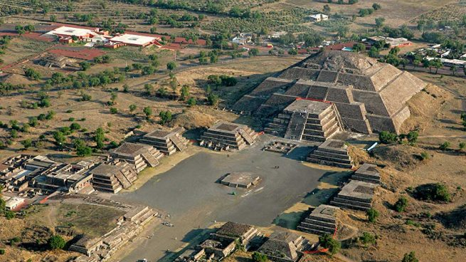
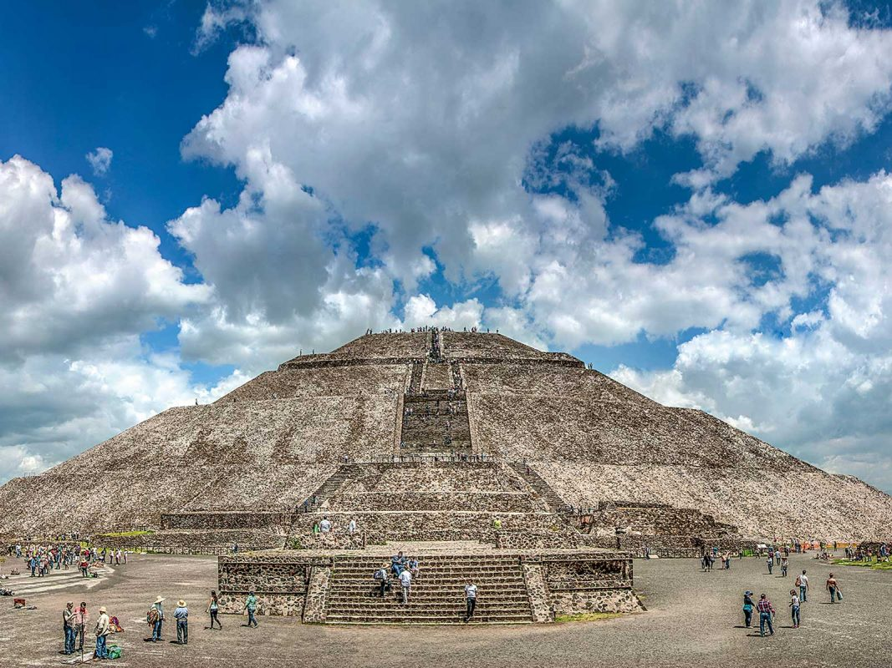
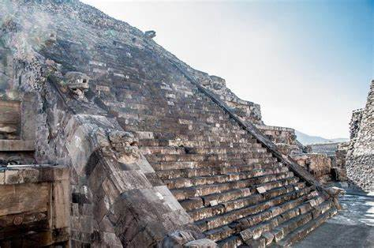

Historia
Teotihuacán es una de las civilizaciones más enigmáticas y poderosas de Mesoamérica. Su influencia se extendió por toda la región, y su legado sigue siendo objeto de estudio y admiración. Ubicada en el actual México, esta ciudad fue un centro político, económico y religioso que floreció entre los siglos I a.C. y VIII d.C. A pesar de su importancia, muchos aspectos de su historia siguen siendo un misterio, incluyendo su origen, su sistema de gobierno y las razones de su colapso.
Orígenes y Fundación
Los primeros asentamientos en la región de Teotihuacán datan de aproximadamente 150 a.C., cuando grupos de agricultores comenzaron a establecerse en el valle de México. La ubicación estratégica de la ciudad, con acceso a recursos naturales como agua, tierras fértiles y depósitos de obsidiana, permitió su rápido crecimiento. A medida que la población aumentaba, la ciudad comenzó a desarrollar una estructura urbana organizada. Se construyeron templos, plazas y viviendas, lo que marcó el inicio de una de las civilizaciones más avanzadas de Mesoamérica. Aunque no se conoce el nombre original de la ciudad, los mexicas la llamaron "Teotihuacán" que en náhuatl significa "Lugar donde los dioses fueron creados".
Expansión y Auge
Entre los siglos II y VI d.C., Teotihuacán alcanzó su máximo esplendor. Se estima que su población llegó a 200,000 habitantes, convirtiéndola en una de las ciudades más grandes del mundo en su época. Su influencia se extendió por toda Mesoamérica, llegando a regiones como el actual Guatemala, Honduras y la península de Yucatán. La ciudad estaba organizada en un diseño urbano avanzado, con calles alineadas y una planificación meticulosa. La Calzada de los Muertos, una avenida de aproximadamente 4 kilómetros, conectaba los principales templos y edificios administrativos.
  
Arquitectura Monumental
| 1 | 2 | 3 |
| Pirámide del Sol | Pirámide de la Luna | Templo de Quetzalcóatl |
Uno de los aspectos más impresionantes de Teotihuacán es su arquitectura monumental. Entre sus construcciones más destacadas se encuentran:
Pirámide del Sol: Con una altura de 65 metros, es una de las estructuras más grandes de Mesoamérica. Se cree que estaba dedicada a un dios solar.
Pirámide de la Luna: Ubicada al norte de la Calzada de los Muertos, esta pirámide servía como centro ceremonial y estaba relacionada con rituales funerarios.
Templo de Quetzalcóatl: También conocido como la Pirámide de la Serpiente Emplumada, es famoso por sus esculturas de serpientes y su posible relación con el poder político y militar.
Sociedad y Gobierno
El sistema de gobierno de Teotihuacán sigue siendo un misterio. A diferencia de otras civilizaciones como los mayas o los mexicas, no se han encontrado evidencias claras de un monarca o dinastía gobernante. Se cree que la ciudad pudo haber sido gobernada por una élite sacerdotal o un consejo de lídere
Sacerdotes: Encargados de los rituales religiosos y la administración de los templos.
Guerreros: Defendían la ciudad y participaban en conquistas.
Comerciantes y artesanos:Fabricaban productos como cerámica, textiles y herramientas de obsidiana.
Campesinos: Cultivaban maíz, frijoles, calabazas y chile, asegurando el abastecimiento de alimentos.
Religión y Creencias
La religión desempeñaba un papel central en la vida de los habitantes de Teotihuacán. Sus templos y pirámides eran escenarios de rituales dedicados a diversas deidades. Algunas de las más importantes eran:
Obsidiana: Utilizada para fabricar herramientas y armas.
Cerámica: Decorada con motivos religiosos y utilizada en rituales.
Textiles: Elaborados con algodón y teñidos con pigmentos naturales.
La ciudad mantenía relaciones comerciales con otras civilizaciones, incluyendo los mayas y los zapotecas. Se han encontrado objetos teotihuacanos en sitios tan lejanos como Tikal, en Guatemala.
Declive y Abandono
A pesar de su grandeza, Teotihuacán comenzó a decaer alrededor del 600 d.C.. Existen varias teorías sobre las causas de su colapso:
Conflictos internos: Se han encontrado evidencias de incendios en los principales templos y palacios, lo que sugiere una revuelta interna.
Cambio climático: Sequías prolongadas pudieron haber afectado la producción agrícola y generado crisis alimentarias.
: Invasiones externas Algunos investigadores creen que grupos enemigos atacaron la ciudad y contribuyeron a su caída.
Para el 750 d.C., Teotihuacán estaba prácticamente abandonada. Sin embargo, su legado perduró en las culturas posteriores, como los mexicas, quienes la consideraban un lugar sagrado.